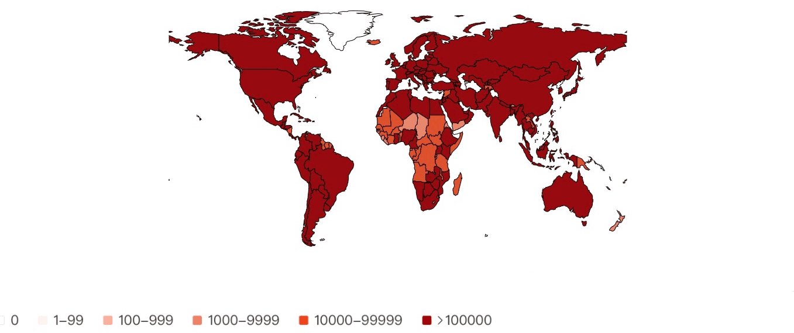
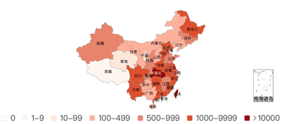
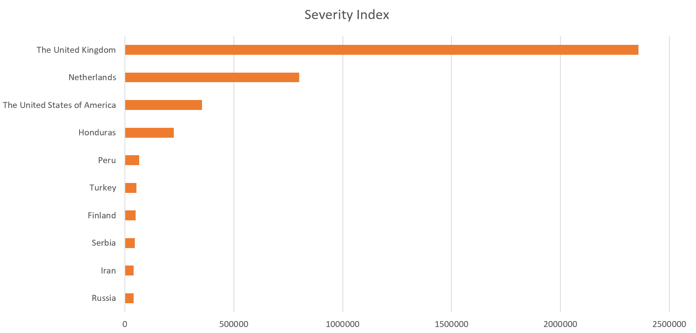
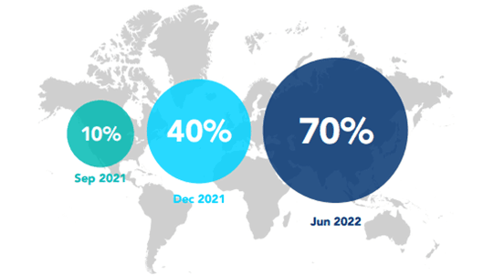

Current situation
The COVID-19 pandemic, lasting for nearly two years, has overwhelmed almost all countries and regions over the world. As of October 23, 2021, the cumulative number of confirmed cases in the world had exceeded 240 million, with 4.95 million deaths and 27.26 million current confirmed cases. The total number of confirmed cases in China (including Hong Kong, Macao and Taiwan) has reached 125,468, with 5,695 deaths and 2,423 current confirmed cases. At present, ranked by the severity index, which is composed of existing confirmed cases, population, built-up area and other factors, the top 10 countries wih the most severe pandemic situation are the United Kingdom, the Netherlands, the United States, Honduras, Peru, Turkey, Finland, Serbia, Iran and Russia.
World Pandemic Map: Cumulative Distribution of Confirmed Cases (October 23, 2021) (Source: https://news.sina.com.cn/)
China Pandemic Map: Cumulative Distribution of Confirmed Cases (October 23, 2021) (Source: https://news.sina.com.cn/)
Currently, the main dominant strain in the world is the Delta variant strain. As of September 22, 2021, the delta variant strain has been discovered in 185 countries and regions. First identified in India, the Delta variant is characterized by significantly increased transmissibility, shortened incubation and intergenerational periods, and possibly increased disease severity. Currently, in China, since two tourists tested positive for nucleic acid in Xi 'an city of Shaanxi Province, a number of associated cases have been reported in Gansu, Inner Mongolia, Hunan, Guizhou, Ningxia, Hebei and Beijing, all of which were infected with the Delta mutant strain.
TOP10 COVID-19 severity index of overseas countries (October 23, 2021) (Source: https://news.sina.com.cn/)
Vaccine is a powerful tool in fighting against the pandemic. Dr. Soumya Swaminathan, WHO (the World Health Organization) chief scientist, said that the delta variant is highly infectious and there has been cases of people still infected with the virus after vaccination, but the vaccine can still effectively prevent severe illness and death caused by the delta variant. On October 7, 2021, WHO announced the launch of global COVID-19 vaccination strategy, aiming to vaccinate 40 percent of the world's population by the end of 2021 and 70 percent by mid-2022. The new strategy is expected to cost 8 billion dollars and require 11 billion doses of vaccine. In China, as of October 21, 2021, the cumulative number of injected vaccine doses had exceeded 2.24 billion. However, from the global perspective, the problem of uneven vaccine distribution and imbalanced vaccination remains severious. By mid-October, 2021, China had provided more than 1.5 billion doses of COVID-19 vaccines to more than 100 countries and international organizations, and will try the best to provide 2 billion doses throughout the year.
COVID-19 Full vaccination population coverage targets for 2021-2022 (Source: https://www.163.com/dy/article/GLPBD49P0519DDQ2.html)
The rapid spread of the pandemic has posed a huge impact on the world economy and politics. The interruption of trade between countries has slowed down the growth of the world economy, and economic globalization is facing a huge challenge. The outbreak of the epidemic is inevitably to act as a catalyst for major changes in the world, especially as China and the United States are becoming the most important forces in the international political landscape.
In the post-epidemic era, we hope that every university student will take the responsibility of national rejuvenation to consolidate and further strengthen the current prevention achievements. Therefore, in this paper, we briefly illustrate the current epidemic situation at home and abroad, summarizes the main effective measures taken by the Chinese government and people in epidemic prevention. Besides, the prevention efforts of all the teachers and students in Southeast University is introduced. Furthermore, a detailed description on concrete prevention guidelines for university students are provided.